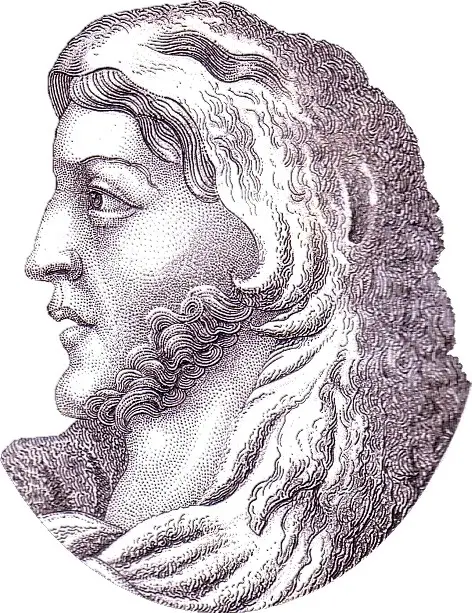
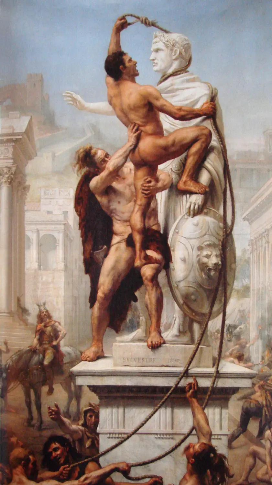
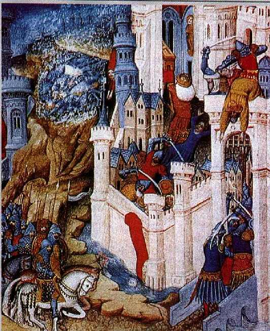
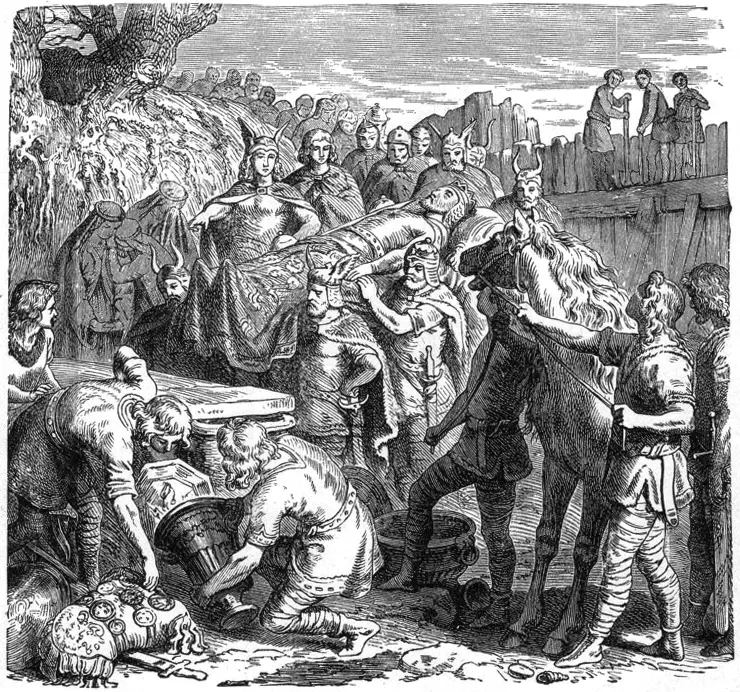

Alaric cướp phá Rome, rồi được chôn dưới lòng sông
Ngày 24/8/410, quân Visigoth vào Rome qua cổng Salaria. Vài tháng sau, theo truyền thuyết, vua của họ được chôn dưới đáy một dòng sông bị nắn dòng, và những người đào mộ bị giết.

Ngày 24/8/410, cổng Salaria ở phía bắc thành Rome mở ra cho quân Visigoth. Có nguồn nói cổng bị kẻ phản bội mở từ bên trong, có nguồn nói người trong thành đã kiệt sức vì đói. Đó là lần đầu tiên sau gần 800 năm thành Rome rơi vào tay kẻ thù ngoại bang. Người cầm quân là Alaric, một thủ lĩnh người Goth từng mang chức tướng La Mã, và đây là lần thứ ba ông vây thành này.
Ba lần vây thành
Rome khi ấy không còn là thủ đô hành chính. Từ năm 402, hoàng đế Honorius đã dời triều đình phương Tây về Ravenna, nơi có đầm lầy che chắn và có lối ra biển. Nhưng Rome vẫn là "thành phố vĩnh cửu", với dân số có thể lên tới 800.000 người, lớn nhất thế giới thời ấy.
Tháng 8/408, tướng Stilicho, người từng nhiều lần đánh rồi lại tha cho Alaric, bị Honorius xử tử. Khoản tiền 4.000 cân vàng đã hứa cho người Goth không bao giờ được trả. Cuối năm 408, Alaric vây Rome lần đầu và chỉ rút khi được nộp tiền chuộc. Cuối năm 409, ông vây lần hai và ép Viện Nguyên lão lập một hoàng đế bù nhìn là Priscus Attalus. Mùa hè năm 410, khi Alaric đang chờ đàm phán gần Ravenna, tướng Sarus đem quân La Mã đánh úp ông. Alaric bỏ đàm phán và quay lại Rome lần thứ ba.
Ba ngày cướp phá


Quân Goth cướp phá trong ba ngày. Lăng mộ của Augustus và Hadrian bị lục soát, tro cốt trong các bình bị rải tung. Từ cung Lateran, họ lấy đi một tán thờ bằng bạc nặng 2.025 pound, quà của hoàng đế Constantine. Vườn Sallust gần cổng Salaria bị đốt và không bao giờ được xây lại. Em gái hoàng đế, Galla Placidia, bị bắt làm con tin.
Thánh Jerome kể trong một bức thư rằng bà Marcella, 85 tuổi, sống trong cảnh nghèo vì đạo, bị lính đánh đập để khai chỗ giấu vàng mà bà không hề có. Bà chết vài ngày sau. Dù vậy, theo tiêu chuẩn thời ấy, cuộc cướp phá khá kiềm chế. Không có thảm sát hàng loạt. Hai đại giáo đường Thánh Phêrô và Thánh Phaolô được chỉ định làm nơi trú ẩn, và phần lớn công trình trong thành còn nguyên, chỉ bị lấy hết đồ quý.
Ở Bethlehem, Thánh Jerome viết: "thành phố từng chiếm cả thế giới, nay chính nó bị chiếm".
Tiếng vang khắp đế quốc


Ở Bethlehem, Thánh Jerome viết: "thành phố từng chiếm cả thế giới, nay chính nó bị chiếm". Hoàng đế Đông La Mã Theodosius II ra lệnh để tang ba ngày ở Constantinople. Người ngoại giáo nói Rome bị trừng phạt vì bỏ các vị thần cũ; sử gia Zosimus viết theo hướng đó. Để trả lời, Thánh Augustine viết bộ sách Thành của Thiên Chúa, về sau trở thành nền tảng của tư tưởng Kitô giáo.
Sử gia Procopius chép lại một giai thoại, mở đầu bằng chữ "người ta nói". Khi một thái giám báo tin Roma đã mất, hoàng đế Honorius hoảng hốt, vì tưởng là con gà trống to tên Roma mà ông vừa cho ăn. Biết đó là thành Rome, ông thở phào. Chính Procopius cũng chỉ ghi đây là lời đồn, dùng để chê sự ngớ ngẩn của Honorius.
Ngôi mộ dưới lòng sông Busento


Sau ba ngày, Alaric dẫn quân xuống miền nam nước Ý, cướp phá Campania, Lucania và Calabria. Ông định vượt biển sang Sicily, có lẽ để lấy lúa, nhưng bão đánh đắm đoàn thuyền ở eo biển Messina. Ít lâu sau, Alaric đổ bệnh, có lẽ là sốt, và chết ở Consentia, nay là Cosenza. Các tài liệu ghi thời điểm khác nhau, cuối năm 410 hoặc đầu năm 411.
Theo truyền thuyết, người Goth tạm nắn dòng sông Busento, đào mộ dưới lòng sông, chôn Alaric cùng nhiều chiến lợi phẩm quý nhất, rồi trả dòng nước về chỗ cũ. Những tù binh làm việc ấy bị giết để không ai biết ngôi mộ ở đâu. Đến nay, cả mộ lẫn kho báu đều chưa được tìm thấy.
Dư âm
Sông Busento dài khoảng 95 km, đổ vào sông Crati ngay giữa thành phố Cosenza. Năm 1820, nhà thơ Đức August von Platen viết bài Das Grab im Busento (Ngôi mộ dưới sông Busento), kể lại truyền thuyết theo lối lãng mạn. Còn người Visigoth, dưới quyền Ataulf, em vợ Alaric, đi lên xứ Gaul và năm 418 lập vương quốc riêng ở miền tây nam nước Pháp ngày nay.
Việc Rome bị cướp phá năm 410 được chính những người đương thời như Jerome ghi lại; còn ngôi mộ dưới lòng sông thì đến nay vẫn chỉ tồn tại trong lời kể.